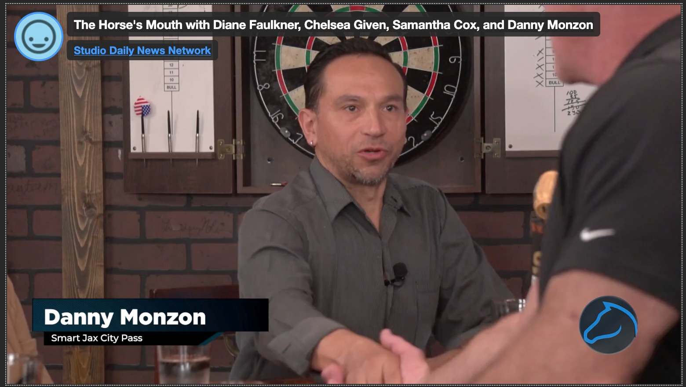
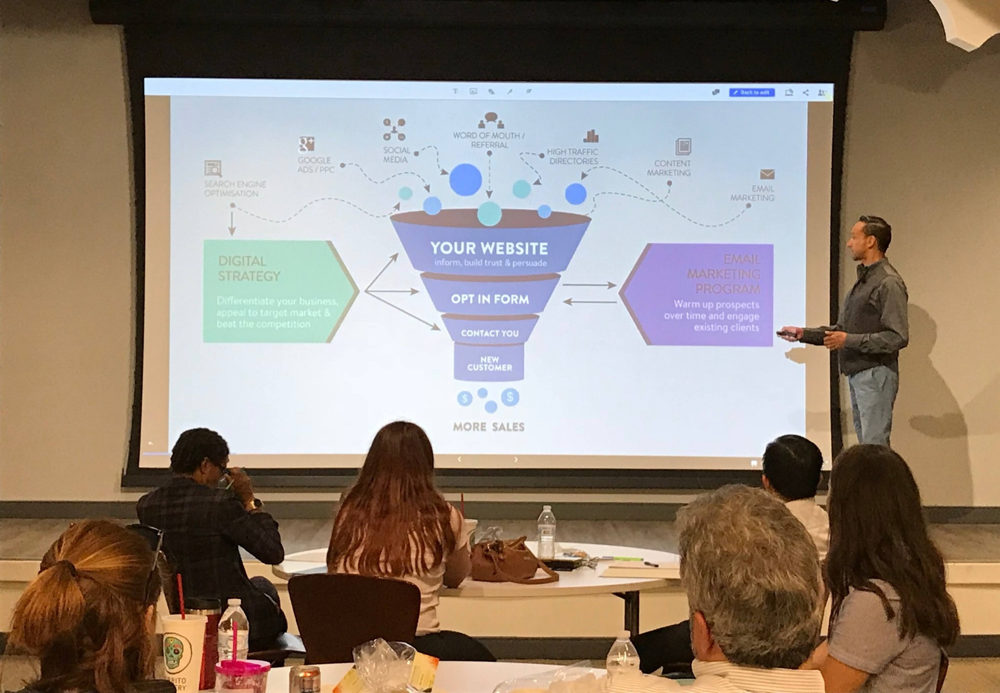
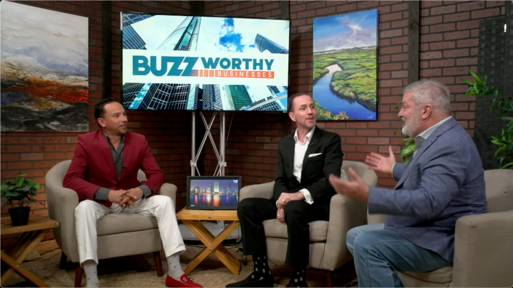
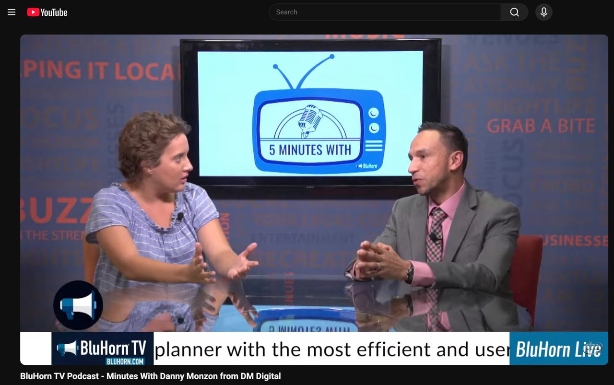
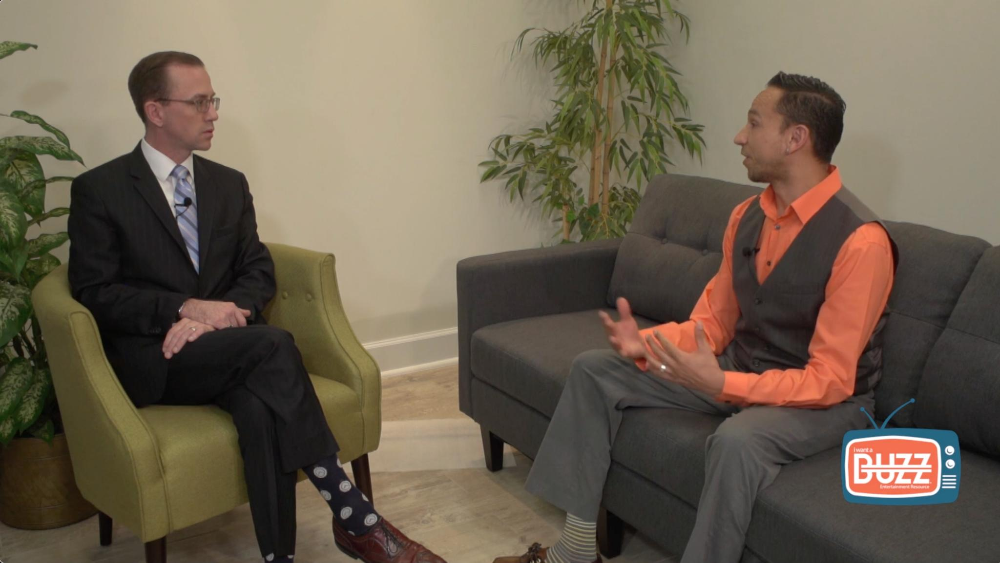
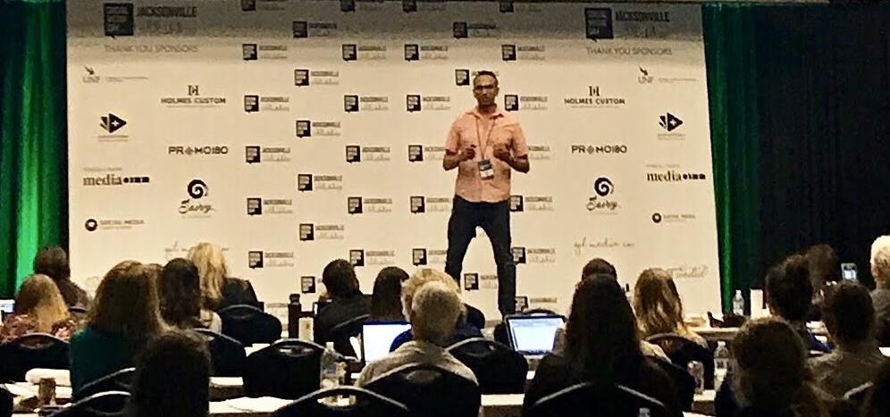
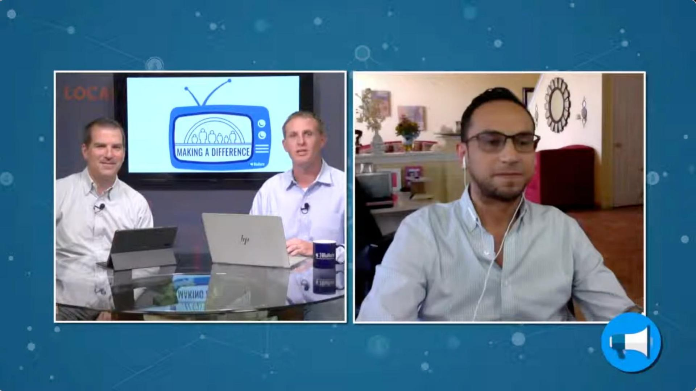
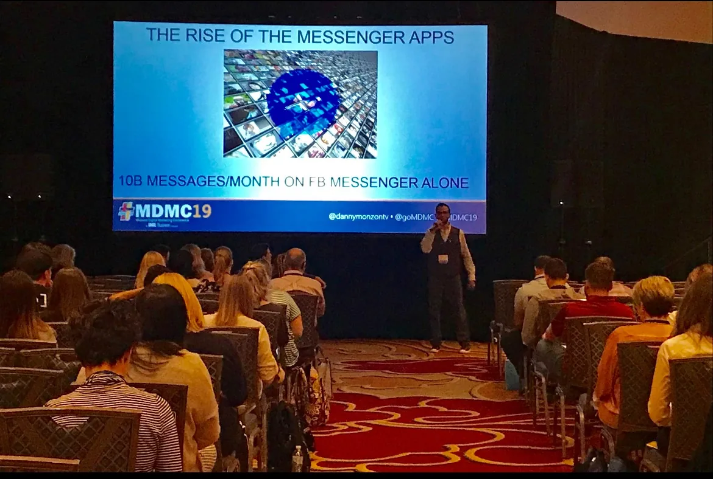

TV appearanceReal Conversations, Real Business
A television interview on business, technology and practical experience.
A curated collection of interviews, podcasts, television appearances and stage conversations where Danny Monzon shares practical insights on Ai architecture, automation, customer retention and building systems that last.


From television studios to industry stages: real conversations about building smarter systems, keeping customers and making technology useful.

TV appearanceA television interview on business, technology and practical experience.
A look inside the conversations behind years of business automation work.
Danny Monzon speaking at the Amplified Business Summit.

TV appearanceA Buzz TV interview featuring Danny Monzon.

TV appearanceA studio conversation about getting more value from business relationships.

SpeakingDanny Monzon presented on Messenger automation in 2018, years before the generative AI boom.
A recorded panel appearance.

TV appearanceA remote television interview.
A recorded business conversation.

SpeakingLong-form discussions on chat marketing, automation strategy, resilience, and the reality of building businesses.
Real Estate Pros Show · Libsyn
Listen to the episode ↗Chat Marketing Podcast · Australia
Listen to the episode ↗SoundCloud
Listen to the episode ↗Direct episode links open in the original publisher's player. Inline embeds can be added after link verification without changing the overall design.
Independent publications and industry conversations documenting the journey from marketing to Ai architecture.
Looking for a guest who builds the systems he talks about? Let's explore your podcast, conference, panel or interview. Available in English and Spanish.
Invite Danny to Speak →